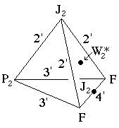
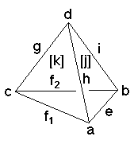

224
224
 226
226 Orbifold Atlas Home Page
Orbifold Atlas Home Page
 Crystallographic Topology Home Page
Crystallographic Topology Home Page
Underlying Topological Space: D3; Figure Pseudo-Symmetry (FPS): m
Euclidean 3-Orbifold with Invariant-Lattice-Complex Letters
(left), Wyckoff Site Letters (right)
 
| FPS | Mult | Lattice Comp | Group Graph | Wyckoff Set | 2[4]Cover |
| 4-2 | F | 4'3'2' | a, b | ||
| 8-1 | P2 | 3'3'2' | c | ||
| 24-1 | J2 | 2'2'2' | d | ||
| 24-1 | F6[J2]F6 | 3'2'<4'>3'2' | e:a-b | ||
| 32-2 | F8[-]P24 | 4'2'<3'>3'2' | f1:a-c, f2:b-c | ||
| 48-1 | P26[-]J22 | 3'3'<2'>2'2' | g:c-d | ||
| 48-2 | F12[-]J22 | 4'3'<2'>2'2' | h:a-d, i:b-d | ||
| 96-1 | m | j:ehi | |||
| 96-1 | m | k:fg | |||
| 192 | 1 | l:jk | |||
| 96-1 | J24[W*2]J24 | 2*=2'2'2'<1'>4'4' | j1:d-e | #221(h) | |
| 96-1 | P212[-]J24 | 2*=3'2'2'<1'>4'4' | k1:c-e | #221(i) | |
| m | 192-1 | m* | l1:gj1k1 | #221(k) | |
| Struct-Mult | Critical Points | Heegaard Surf | Wyckoff Cut |
| NaCl-1 | FF/J2/J2/P2 | H3'3'2'2'm{1'} | f1 f2 i h; e f2 g h |
| FCC -2 | FP2/3'/J2/F | H4'3'2'2'm{1'} | e f1 g i |
224
226
Orbifold Atlas Home Page
Crystallographic Topology Home Page
Page last revised: